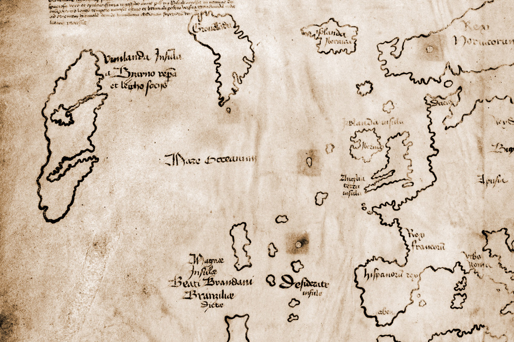

BIENVENIDOS
La tecnología nos permite hoy ver una amplia cantidad de museos, con colecciones extraordinarias, desde la comodidad de nuestra escuela o casa. Te presentamos aquí los museos que no puedes dejar de visitar virtualmente.
READ MOREsumerjete en una nueva aventura
El misterioso mapa de Vinland, la primera cartografía de América hecha por los vikingos
Presentaciones virtuales

recorridos guiados desde la comodidad de tu hogar

descubre obras de arte que jamas imaginaste que existian

.Del 1 hasta el 15 de junio iremos a las cavernas prehistoricas, no te quedes atras
"en mayo de 1940, cuando los alemanes invadieron Francia a comienzos de la segunda guerra mundial, un profesor ya sexagenario se sumó a la oleada de parisinos que huían hacia el sur del país. Se llamaba Henri Breuil, aunque se lo conocía como abate Breuil por su condición de clérigo, y era la mayor autoridad en arte paleolítico de la época, el hombre que había explorado y calcado prácticamente todo el arte parietal que, desde el descubrimiento de Altamira en 1879, se había ido hallando en España y Francia." todo esto y más
La evolucion desde otro punto de vista

colaboraciones con cientificos de NATHIONAL GEOGRAPHIC
Unete a nuestro podcast mientras grandes cientificos develan misterios que desconociamos.
NOVEDADES PARA USUARIOS PREMIUM
Adquiere tu membresia al mayor museo virtual y no te pierdas de nada.
REUNIONES VIRTUALES PARA NIÑOS
Porque los mas pequeños de la casa merecen lo mejor, tenemos salas pensadas para ellos